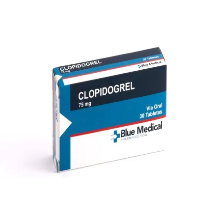
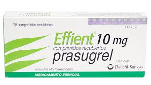
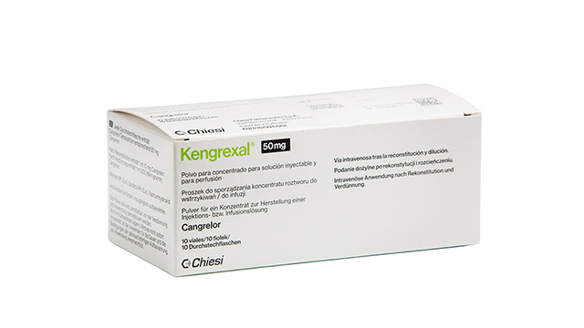

1a Generación (No selectivos, mayor riesgo de sangrado) Mecanismo: Activan el plasminógeno libre en plasma → fibrinólisis sistémica.
2a Generación (Selectivos, mayor afinidad por la fibrina) Mecanismo: Activan el plasminógeno dentro del trombo → menos fibrinolisis sistémica
Ventajas: Mayor eficacia trombolítica, menor degradación de factores de coagulación. Menor riesgo de sangrado en comparación con la primera generación
3a Generación de Fibrinolíticos (Optimización genética del rt-PA) Activan el plasminógeno convirtiéndolo en plasmina, una enzima que degrada la fibrina del coágulo, favoreciendo así la fibrinólisis (disolución del trombo). Mayor especificidad por la fibrina (actúan más en el sitio del coágulo). Mayor vida media, lo que permite administración en bolo único. Menor riesgo de sangrado sistémico comparado con generaciones anteriores
1a Generación (No selectivos, mayor riesgo de sangrado) Infarto agudo al miocardio (IAM) con elevación del ST Embolia pulmonar masiva Trombosis venosa profunda extensa Tromboembolismo arterial periférico
2a Generación (Selectivos, mayor afinidad por la fibrina) Infarto agudo al miocardio Accidente cerebrovascular isquémico agudo (ACV) dentro de las 4.5 h Tromboembolismo pulmonar masivo
3a Generación de Fibrinolíticos (Optimización genética del rt-PA) Infarto agudo al miocardio (Tenecteplasa) ACV isquémico agudo (en investigación y uso restringido)
1a Generación Hemorragia activa o reciente Antecedentes de hemorragia intracraneal o ictus hemorrágico Traumatismo o cirugía reciente Hipertensión grave no controlada Aneurismas cerebrales
2a Generación Igual que 1ª generación, más: Uso reciente de anticoagulantes orales con INR elevado Cirugía mayor reciente Punción lumbar o arterial reciente
3a Generación Mismas que en generaciones anteriores Especial cuidado en pacientes >75 años por riesgo de hemorragia cerebral
Clopidogrel
Como antiagregante plaquetario:
75 mg cada 24 horas.
Se administra una dosis de carga de 300 Mg, seguida de 75 mg cada 24 horas, Combinada con AAS (ácido Acetilsalicílico)
Prasugrel
Cangrelor
Preparación:
Dosis Inicial:
CAMBIO A TRATAMIENTO ORAL:
Clopidogrel
Prasugrel
Cangrelor
Clopidogrel
Prasugrel
Cangrelor
Clopidogrel
Prasugrel
Cangrelor